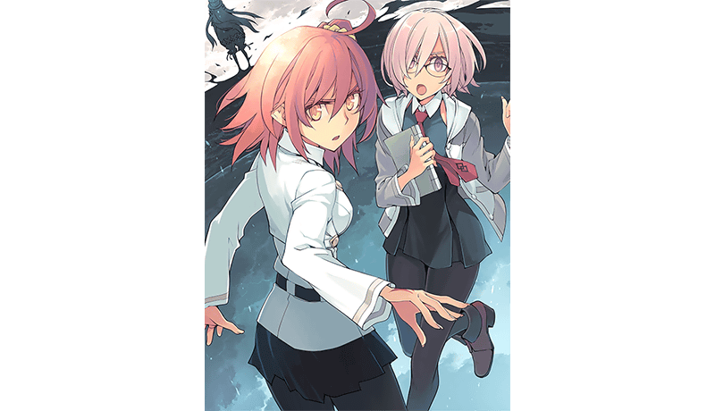
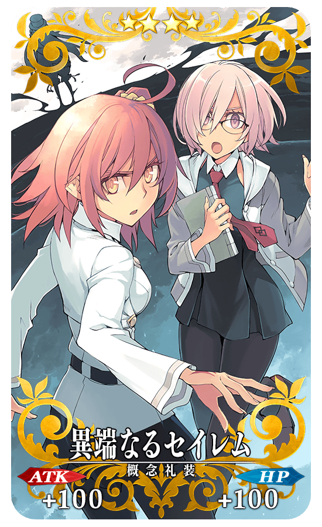

以「Fate/Grand Order」1.5部的「亞種特異點Ⅳ」漫畫單行本第1集「Fate/Grand Order -Epic of Remnant- 亞種特異點Ⅳ 禁忌降臨庭園 塞勒姆 異端的塞勒姆」在2019年8月27日(二)發售！
為了記念單行本的發售，舉辦『「Fate/Grand Order -Epic of Remnant-」亞種特異點Ⅳ漫畫發售記念宣傳活動』！
◆舉辦期間◆
2019年8月27日(二) 17:00～9月10日(二) 11:59
◆有關從者真名的注意◆
在2018年12月31日(二) 23:00以後新配信的主線故事及期間限定活動、一部份關卡、宣傳活動及召喚中，會顯示隱藏真名的對象從者真名。
※已經配信的主線故事、復刻活動、一部份關卡中不在此限。
■亞種特異點Ⅳ 禁忌降臨庭園 塞勒姆
異端的塞勒姆
單行本第1集

發售日:2019年8月27日(二)
發售元:一迅社
原作:TYPE-MOON
漫畫:大森葵
價格:562円(含稅)
※發售日因地區而異。
通過下述期間中在迦勒底之門出現的亞種特異點Ⅳ漫畫發售記念關卡，得到關卡限定的概念禮裝吧！
◆舉辦期間◆
2019年8月27日(二) 17:00～9月10日(二) 11:59
◆關卡開放條件◆
通過「特異點F 炎上汙染都市 冬木」的御主對象
※請注意在亞種特異點Ⅳ漫畫發售記念關卡沒有文字冒險部份。
◆亞種特異點Ⅳ漫畫發售記念關卡限定概念禮裝◆
|  |
★★★★SR |
下述的期間中，在進行對象從者的強化時，大成功(經驗值2倍加成)・極大成功(經驗值3倍加成)發生機率以期間限定變成2倍！
務必藉此機會強化對象從者吧！
◆舉辦期間◆
2019年8月27日(二) 17:00～9月10日(二) 11:59
◆對象從者◆
| 職階 | 稀有度 | 從者名 |
|---|---|---|
| Archer | ★★★ | 羅賓漢 |
| Lancer | ★★★★ | 哪吒 |
| Caster | ★★★★ | 俄刻阿諾斯的Caster(喀耳刻) |
| ★★★★ | 湯瑪斯・愛迪生 | |
| ★★★★ | 米德拉什的Caster(示巴女王) | |
| ★★★ | 傑羅尼莫 | |
| ★★★ | 美狄亞 | |
| ★★ | 威廉・莎士比亞 | |
| ★★ | 漢斯・克里斯蒂安・安徒生 | |
| Assassin | ★★ | 夏爾＝亨利・桑松 |
| ★ | 瑪塔・哈里 | |
| Foreigner | ★★★★★ | 阿比蓋爾・威廉斯 |
下述的期間中，在關卡開始時的支援選擇畫面，選擇其他御主的對象從者做支援情況、其他御主選擇自己的對象從者做支援情況的友情點數獲得量變成2倍。
將好友和跟隨的御主等做為支援能選擇從者和概念禮裝的編成列入考量，藉此機會入手更多友情點數吧！
◆舉辦期間◆
2019年8月27日(二) 17:00～9月10日(二) 11:59
◆對象從者◆
| 職階 | 稀有度 | 從者名 |
|---|---|---|
| Archer | ★★★ | 羅賓漢 |
| Lancer | ★★★★ | 哪吒 |
| Caster | ★★★★ | 俄刻阿諾斯的Caster(喀耳刻) |
| ★★★★ | 湯瑪斯・愛迪生 | |
| ★★★★ | 米德拉什的Caster(示巴女王) | |
| ★★★ | 傑羅尼莫 | |
| ★★★ | 美狄亞 | |
| ★★ | 威廉・莎士比亞 | |
| ★★ | 漢斯・克里斯蒂安・安徒生 | |
| Assassin | ★★ | 夏爾＝亨利・桑松 |
| ★ | 瑪塔・哈里 | |
| Foreigner | ★★★★★ | 阿比蓋爾・威廉斯 |
※請注意NPC從者即使是對象從者也在友情點數獲得量2倍的對象外。